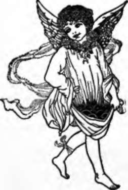

Herbs And Apples | by Helen Hay Whitney
I give you this, the bitter and the sweet. It holds my heart, can you not hear it beat ? So poor a gift to put within your hand - Apples and Herbs ! - but you will understand.
| Title | Herbs And Apples |
| Author | Helen Hay Whitney |
| Publisher | John Lane Company |
| Year | 1910 |
| Copyright | 1910, John Lane Company |
| Amazon | Herbs and Apples |
By Helen Hay Whitney, Author of "Songs and Sonnets," "Gypsy Verses," Etc.
Acknowledgment is made to Messrs. Harper & Bros., the Century Company, The Metropolitan Magazine, and Collier's Weekly, for courteous permission to reproduce certain of the verses included in this volume.
 To Neighbor Life
To Neighbor Life- Neighbor Life, I love you well, Have you any goods to sell? Let me buy or let me borrow Joy, to tide me o'er the morrow; I will give you in exchange Baskets full of thoughts that range,...
- The Unburied
- In the wood the dead trees stand, Dead and living, hand to hand, Being Winter, who can tell Which is sick and which is well ? Standing upright, day by day Sullenly their hearts decay ...
- Up A Little Road
- Up a little road with the morning in my arms, Drenched with dew and tipsy with the madness of the May, Leafy fingers on my face, I stop not for your charms! Love is waiting round the turn, to...
- On Cedar Street, New York
- I, whose totem was a tree In the days when earth was new; Joyous leafy ancestry Known of twilight and of dew, Now within this iron wall Slave of tasks that irk the soul, To my parent...
- The Dead Wanton
- She was so light, so frail a thing, She had no wisdom but her face, Which caught men's fancy like the Spring Yet held them but a moment's space. She is the youngest of the dead, And so ...
- Leaven
- Others furnish bread and meat, Busy hucksters on the street, They will give you what you need, All the facts your life to feed. Mine are not these wares of earth, I can give my love but...
- Quaeritur
- What if to-day, when I have made so sure That love is utterly and wholly mine, What if I found that faith should not endure And all my trust in you I should resign; That when I send my tho...
- Love Land
- Where is El Dorado ? Where is bright Cathay ? These are lands where we should go To live and love to-day. Miles of glistening beaches Over all the sun, Tropic, spicy-laden breeze ...
- By The Western Gate
- You and you only! - By the Western gate That fronts the falling sun I shade my face And watch for you. As one who's lost the race Tries to demand no further gift from Fate Lest he be hurle...
- For Music
- The Indian Summer and Love have fled, Oh, red, red lips like a crimson rose, Oh, slender hands with the tips of red, You are lost in the land of Nobody-knows. The sweet breeze blows but it...
- The Little Ghost
- The little one who loved the sun Who only lived for play, Ah, why was she the one condemned To dark and dreams for aye! The perfect perfume of her life Was as a rose's breath, And no...
- Madonna Eve
- From what far spicery derives your hair The sweet faint fragrance that enslaves sense ? What subtle love trick taught you to be fair With overt lure and covert reticence ? Madonna Eve, you...
- A Conversation
- Laddy, leave your pedant's task, Rove the world with me. Fields and towns and pretty lands Together we would see. There be workers everywhere, You would not be missed. Come, ah come...
- Be Brave
- Be brave about yourselves, you little ones, If in the crazy warp and woof you gleam With the insistence of determined suns, Shine, being true and modest in your dream. If to the peace of n...
- Forfeiture
- So I have lost you. When the utter ache Shall fade at length to mere despondency What will the answer to this problem be? They say that nothing dies, that all we stake Brings some unknown ...
- The Search
- I tire of the struggle, the search for the ultimate I, There hangs the chalice of sapphire, the infinite sky, Why thro' the space of despair should my spirit be hurled Seeking for truth, when...
- Dust
- Motes of the city dust, could this thing be That midst your myriad particles for me Might come one atom out of Ispahan, One spiced far memory of caravan. Indrawn upon my breath I'd know an...
- Nature's, Child
- I had a friend whose soul was very fair, His word was wisdom and his strength was sure; His courage in the ills he had to bear Made others strong and able to endure. I asked no love, no tr...
- Veritatis
- Seated among the shards of Potiphar I pondered. Shall we still strive on ? forsooth There is no better, that is good as Best, There is no truer that is true as Truth. The Peacock ...
- The Peacock
- She was more beautiful than tropic night, Luring, compelling as the smile of Fate; Like a poor wastrel, I for her delight Squandered my soul and gained her idle hate. Peacock and paroquet!...
- Anticipation
- The joy is in the making. While we sow Our dream is wonderful with flowers, we name The purlieus of our garden and the aim Is worth the effort, yet we cannot know The garden will be just a...
- The Wayfarer
- Half way to happiness, The whole way back again, Stumbling up the stubborn hill From the luring lane. Little sunset House of Hearts Standing all alone, I could come and sweep the lea...
- Renunciation
- Not what I ask, but what I do not ask, O my Beloved, proves my love for you. And love can set to love no harder task Than wistful silence, reticence to sue. I lock my lips, I force a wise ...
- Arabesque
- Gold fish, rose and red As lady Lillith's hair, Mauve and blue as curling smoke And water-sapphires there. At the fountain's brim I built a little dream, As a goldsmith cunningly ...
- The Architects
- How shall we build it curiously well, Our house to live and love in ? - Shall it be Only significant to you and me, Or shall it be a palace where may dwell Those whom our spirits notice ? ...
- Ambush
- Crafty Chieftain, where you lie You can see the clouds drift by, Waiting in the dusky fern For your enemy's return. Does the beauty of that place Never tell you of my face, I, you le...
- The Scales
- I wonder if the store of joy And love is limited, And if because my heart is glad Some other heart has bled. Believing this, a balance just Of recompense, I pray That my beloved gain...
- The Old Tragedy
- Did I allure you ? - I only meant to love you, I only meant to be so dear you could not let me go. I held you close against my heart, bending down above you, As mothers brood above their babe...
- Taboo
- Now am I sacred, for that holy thing, Your touch, has made me as a god; to-day I am magnificent, I am a king To whom my fellow men must cringe and pray. Such is taboo; but when to-morrow c...
- The Rivals
- Seated in my ingle nook With Duty by my side, How I strove to see her charms And take her for my bride! Sweet, I said, I love you so - And suddenly I heard The laughing call of...
- Alone
- I only wanted room to be alone. I saw the days like little silver moons Cool and restrained shine forth; there were no noons To make me glad with glory, to atone. I dreamed of solitude. Wh...
- Beneath The Mask
- I said that men were cowards, I thought that men were brave, I said that women gained no faith For all the love they gave. Beneath a mask of scorning I wore a heart of trust, But lau...
- Thoth
- Hewn from basalt, black as sin, Blind eyes staring, hands on knees,- This is Thoth, who shall survive All your fair divinities. Mars and Venus, piping Pan, White Diana, Cupid sweet, - ...
- Little Dancer
- O little dancer, slim as a new moon, A candle flame blown by the wind - how soon Will all this be forgotten! Do you care The pagan poppies dying in your hair; Do you despair to think that ...
- Sic Itur Ad Astra
- If it be educational to breast Salt lipped the wave that is the woe of Earth, Who could be called a fool? There is no rest From sorrow in this island of re-birth. And yet, ringed 'round wi...
- The Judges
- Watch me, eyes of the wind and rain, See if I come to the dusk with stain, Search me, eyes of the soaring sun, See what mischief my hands have done. If there be beauty of word or deed, ...
- The Spring Planting
- What shall we plant for our Summer, my boy,- Seeds of enchantment and seedlings of joy ? Brave little cuttings of laughter and light ? Then shall our Summer be flowery and bright. Nay!...
- An Impressionist Picture
- How do you do, I said; the yellow coat She wore was like a golden serpent's skin. I took her white gloved hand, my voice grew thin As tho' her hand were tight about my throat. The air wa...
- Such Help For Singing
- Such help I have for singing! The little winds a-stir Touch gently on the lisping leaves Like dainty dulcimer. The sights and scents of April - What dreams, what themes they bring - ...
- Tempus Edax Rerum
- Upon the silence of my unconcern The little noise that was your name falls dead. I can remember how your mouth was red, In the lost years, but tho' the senses yearn For some unguessed desi...
- The Coward
- Wishful of many honors, He was too lame to climb, And so he sat to wait for Death, Forgetting to be brave. He never saw the windfalls, From off the trees of Time, Drop down in mellow...
- The Lost Romany
- The Romany has gone, he has taken all my kisses, I knew I could not keep him, so I laughed and let him go. I do not know the road where his freedom and his bliss is, So take my sober spinning...
- Compensation
- If one grew blind thro9 gazing Wide-eyed upon the sun, What matter when such memoried light Would last till life were done. If one should die of loving, Divinely wild, and brave, Wha...
- Untamed
- Ah, we weary so with kisses, Weary so with your caresses, As the hooded hawk returning To its tinkling bells and jesses, So we flutter to the prison Of your arms, in meek surrender, ...
- To Pervanche
- If you were mine- (for all the little flowers That see you, weary of their innocence) - If prayers that have been pale with penitence Grew purple with our passion, all the hours From sun t...
- The Belle
- She spread her atlas petticoat So rare, so fine to see. Her bonnet was of Tuscan straw, Her shawl was Turkey red. She peacocked gay before men's eyes, This lady of degree, On slipper...
- Release
- How may we be released from memories ? One dreads each green renewal of the grain, Reviving ancient life. If but the brain Might be made clean of last year's withered lies, Blown like brow...
- The Thief
- Did you see the rascal with the rain-grey eyes ? He robbed me of my happiness before I knew its worth. He stole into my garden and took it by surprise, When midnight hid his wicked ways upon ...
- I Will Write Letters To The Grass
- I will write letters to my friend the grass, I will sing all my songs to lilac flowers Gather the spices in the airs that pass, And wrap my heart close shrouded in hours. I dread man'...
- Only This
- We need demand no further gift from Heaven, We might dispense with documents and creeds, If but this one great grace to us were given- The strength to follow where our reason leads. ...
- The Survivor
- Beauty will crumble with tasking, Love rarely lasts for a year, Virtue is sold for the asking, Bravery fades before fear. Youth never lives till the morrow, One thing of all is alive, ...
- Megaera
- Always to suffer so, to want and weep With woe that groweth every day more deep; To don the green robe of tormented scorn, And ever curse the hour that love was born ! Furies, my Sisters! ...
- The Song Of Mokai
- He's dead, I watched him die. He cast a spell on my mate, They loved, and the moon whirled 'round the sky, They mocked at my rage and hate. Blood red from the burning sea The sun rose, ...
- To The Gypsy Man
- Is there no room in your gypsy heart Where a woman's love might lie Warm and sheltered, your prize and song, As you wander beneath the sky ? No, for you say, I '11 carry no weight, I ...
- There Is No Danger In Disdain
- There is no danger in disdain, No grief in perfidy ; The meek they are who taste of pain And matchless misery. The hearts who give, and giving, die, Could they but learn the way To t...
- The Playmate
- Brown boy running on a wide wet beach, Free as the water and the wind are free; Eyes of an odalisque and skin of a peach, O for such a playmate to play with me! - Drenched with the sunshin...
- Afterwards
- You know how I came to you, World beaten, tossed aside; Ready for death at a hangman's hand, Stript of all hope or pride. Leaning, you gathered me up Close to your great sweet heart, ...
- The Old Maid
- Ah, Heaven! How soon my body will be old ! I powder and I perfume and I tire With the long wasting of my one desire. I choose fair colors, furs, and antique gold To draw men's eyes and han...
- Madness?
- They say I'm mad because I stare And look as tho' they were not there, Because I only speak when aught Occurs to me by way of thought. Instead of serving Fashion's creeds, I cut my coat...
- The Scholar
- From what sweet masters have I fathomed doubt, What love and laughter taught me to be blind; How patient did they point the letters out Latin and Greek to my bewildered mind. Now I am very...
- Wisdom's Secret
- Coerced by Furies who persuaded me That life was imminent with idleness, Their jibes made mad, their lashes aided me To grasp the accident of bitterness. Come storm! I cried, come passion ...
- Caged
- Once I had wings - I had no heart to fly, They put me in a cage, I did not die. They tamed me, taught me tricks and bade me sing; I waited, bore it patiently; one thing I knew, that some d...
- The Wife Speaks
- Not all those women you have loved and left, O my Beloved, can stir my jealousy; Not the light loves which you forgot for me, For my heart's fingers made by life most deft Have mended ail ...
- The Altar
- Some take comfort from a star, Thro' the slow grey surge of Time, Some take joy from ruddy war, Lust of conflict, heat of crime. In these days of codes and creeds, Gods may wander newly...